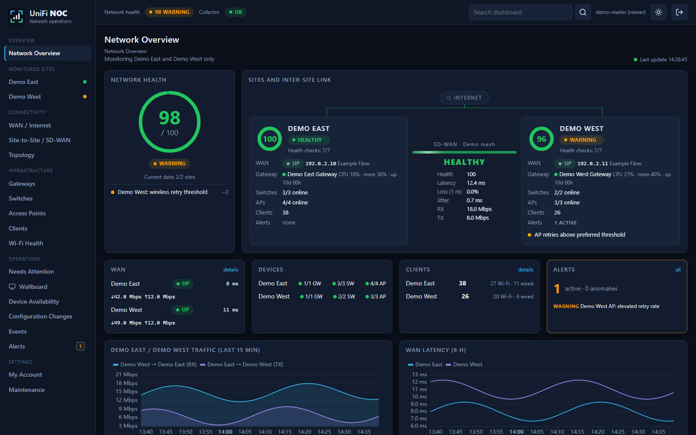
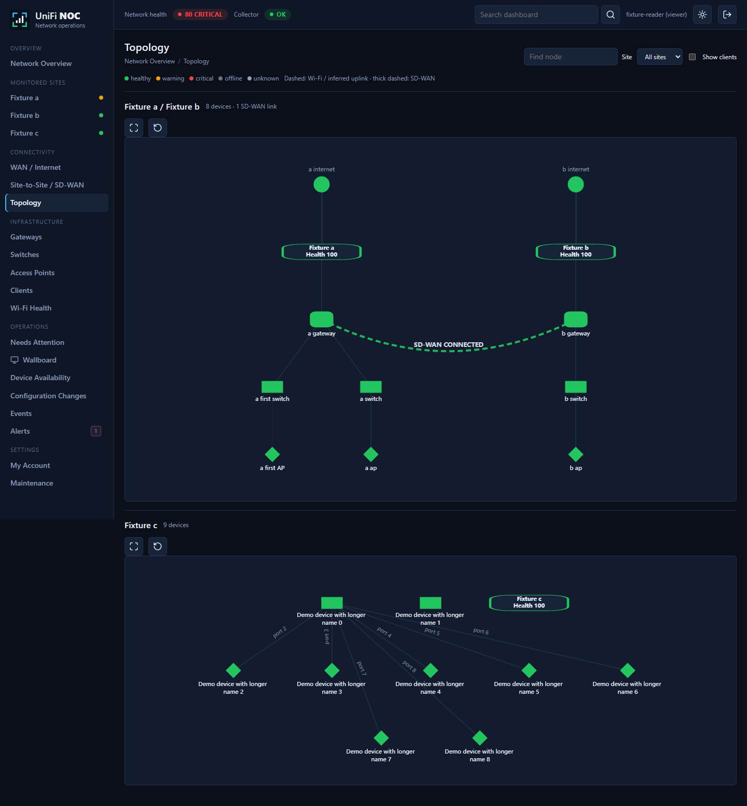
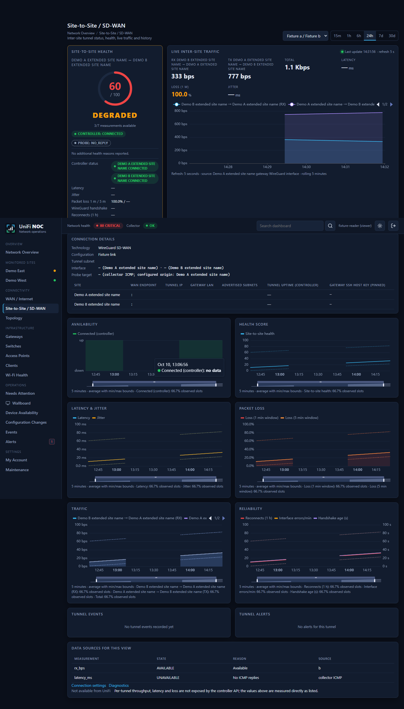
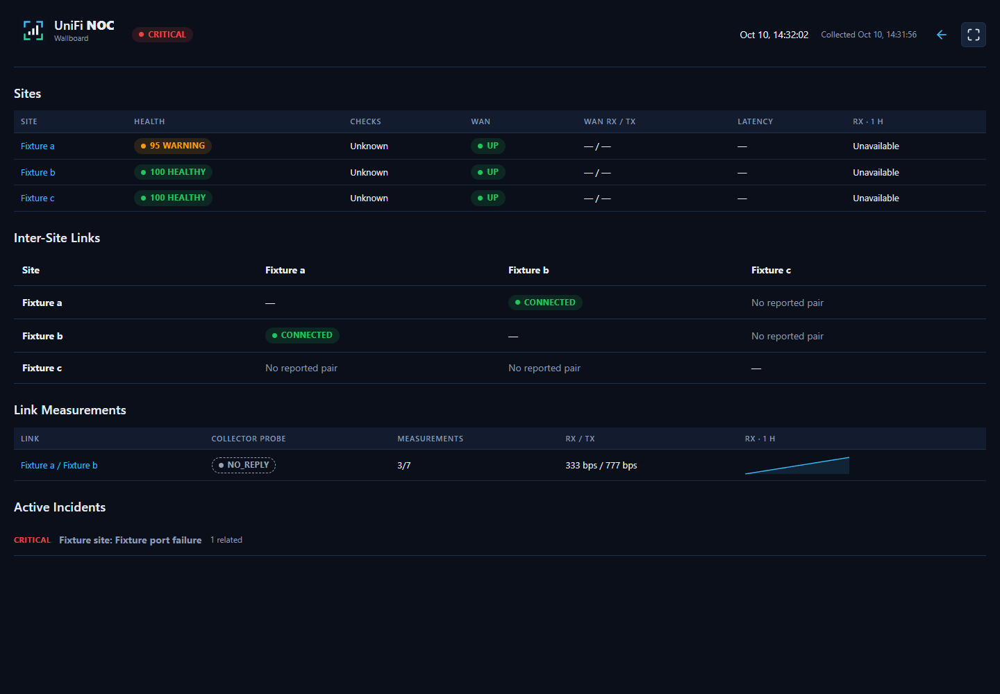

Health With Context
Site and device health alongside freshness, missing-data coverage and the reasons behind a warning.

Site health. Real connectivity. The signals that need attention.
Understand what is happening across your selected UniFi sites without assembling another dashboard stack.
Site and device health alongside freshness, missing-data coverage and the reasons behind a warning.
WAN and discovered SD-WAN links with separate controller state, traffic counters and optional probe measurements.
Unacknowledged alerts, availability, maintenance and observed configuration changes, with site-scoped access.
Actual interface. Synthetic demonstration data.



Docker Compose, persistent storage and owner-managed setup. No project-operated telemetry service and no separate Grafana dependency.
Source-available under PolyForm Noncommercial 1.0.0. Personal, educational and qualifying noncommercial use is permitted under its terms. Commercial use requires separate permission. This is not an OSI open-source license.
Unifi-NOC is not affiliated with, endorsed by or supported by Ubiquiti Inc. UniFi and Ubiquiti are their owner's trademarks. Supplied as-is, without warranty, SLA or guaranteed device/API compatibility. Monitor only authorized networks; measurement support and coverage vary. Read the full disclaimers.